Section 10 Design and Install a Kubernetes Cluster
Contents
222. Choosing Kubernetes Infrastructure
這個章節在講如何選擇 K8s 建在哪裡，知道了一個蠻有趣的名詞 Kubernetes Turnkey Cloud Solutions
223. Configure High Availability
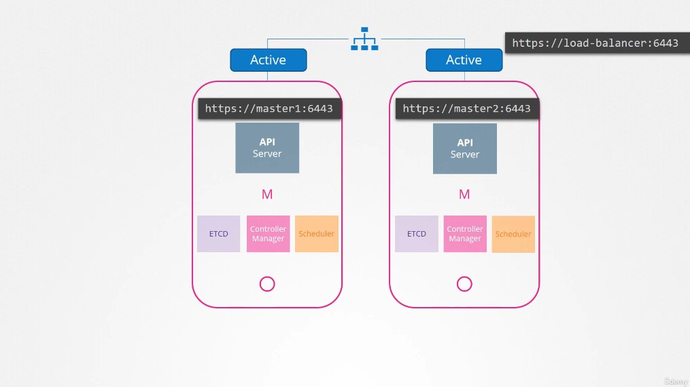
▲ api-server 可以是 Active-Active mode，不過 kubectl config 一次只能設定一個 URL，所以建議在前面放一個 load blancer
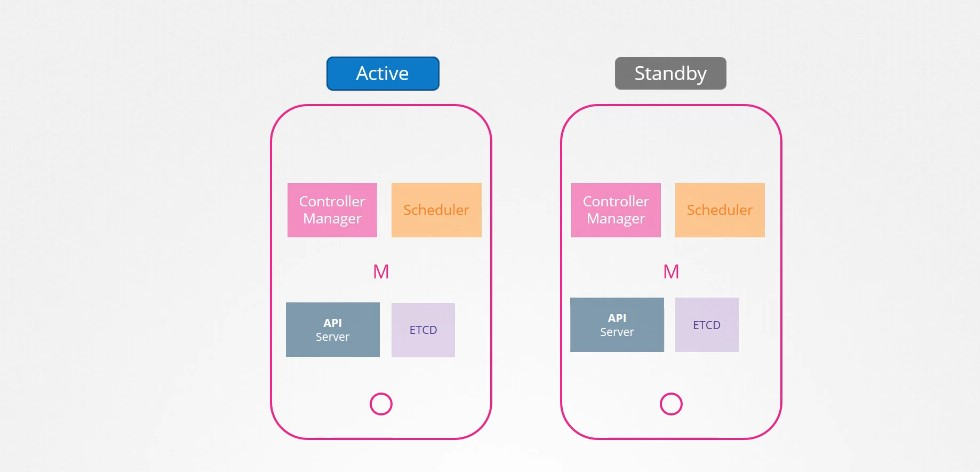
▲ 但是 Controller Manager 與 Scheduler 就不能是 A-A mode，避免重複動作
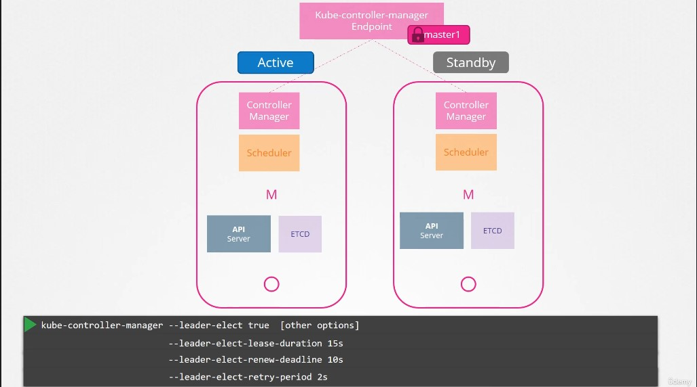
▲ controller-manager 預設在啟動時會帶 --leader-elect true 執行搶旗，沒有搶到的節點每兩秒 (--leader-elect-retry-period) 會去看看當選人是不是死了。
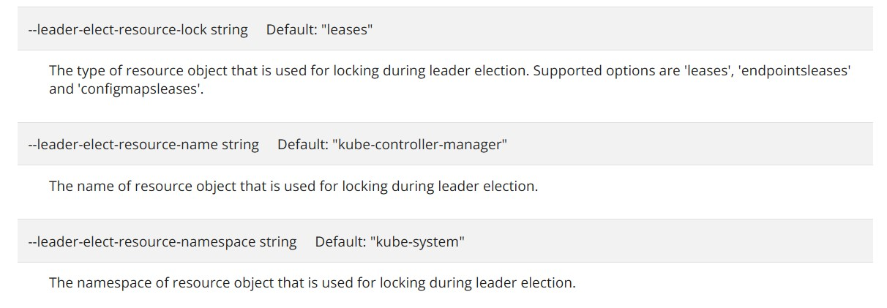
▲ 搶旗方式是看誰先去更新 K8s 內的 resource kube-controller-manager(由 --leader-elect-resource-name string 定義 docs)
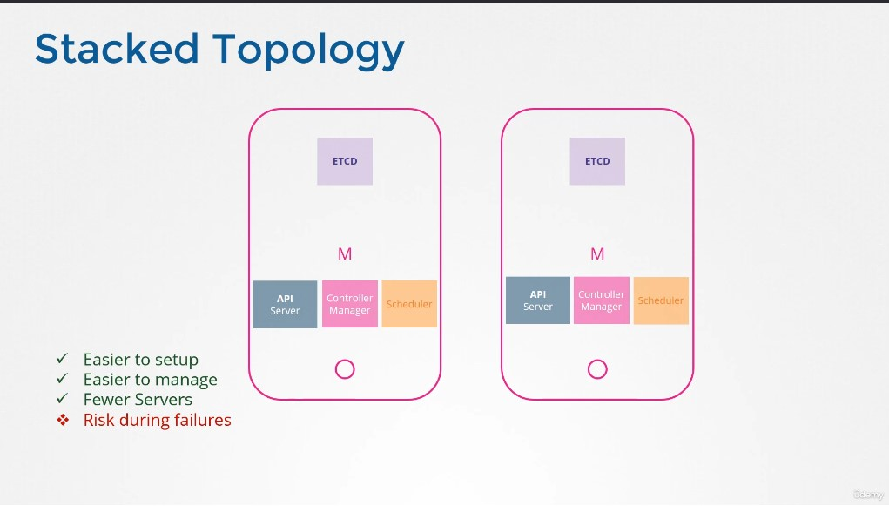
▲ etcd stacked topology 就是將 ETCD server 置於 master node 裡面。
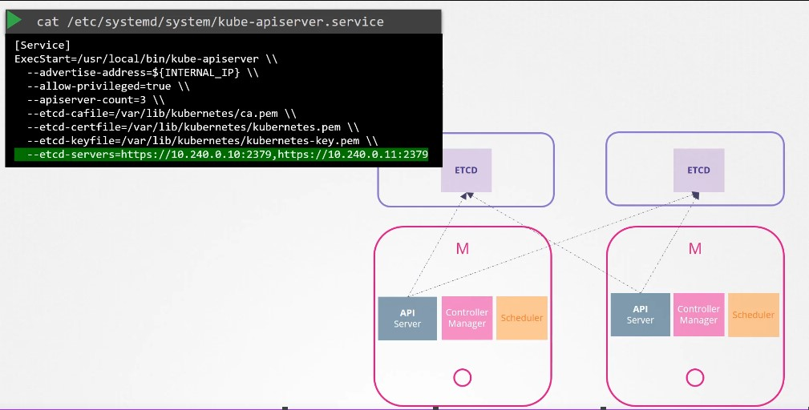
▲ etcd 作為一個獨立的元件當然可以外掛，反正我們都要在 api-server config 內設定 etcd server 在哪。
224. ETCD in HA
這個章節主要討論 etcd 如何做 HA。
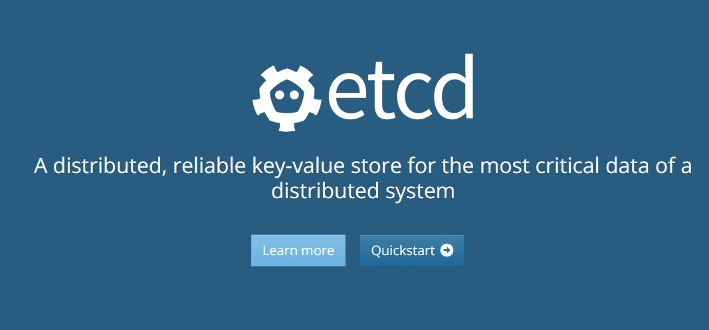
▲ etcd 官方網站的介紹說明 etcd 是一個 分散式且可靠的鍵值資料庫 (A distributed, reliable key-value store)
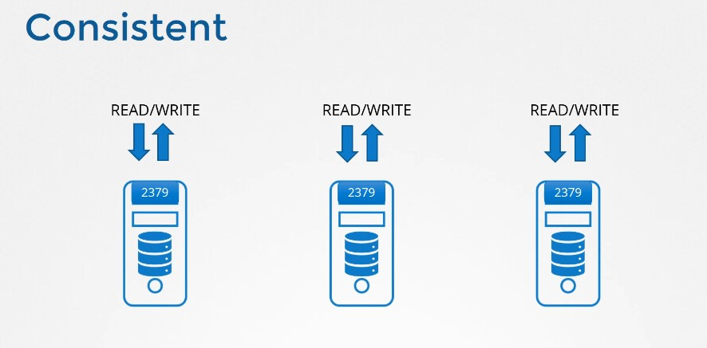
▲ etcd 每一個 node 都可以 R/W (這句話界於對與不對之間，後面會講到)
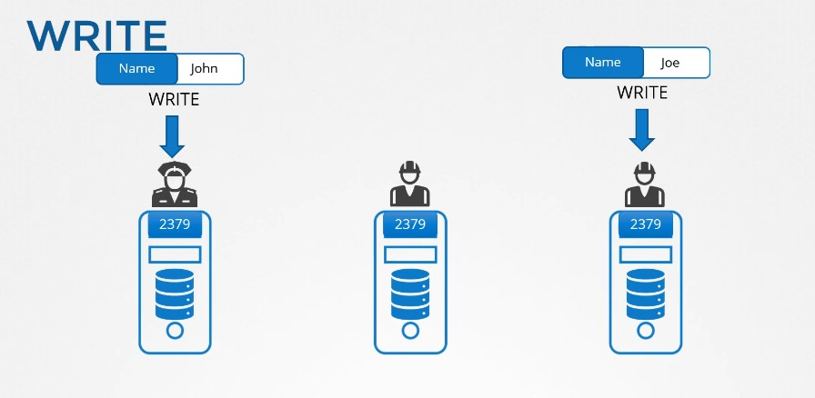
▲ 嚴格一點說起來 etcd 每個節點都能受理「寫入任務」，但只有 leader node 會執行寫入、派送的動作。
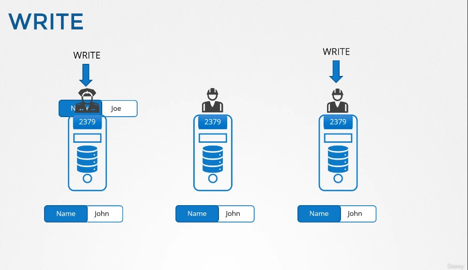
▲ 其它 follower 節點受理寫入任務後會把 transaction pass 到 leader node 身上。
OK，寫入沒問題了! 真的沒問題了嗎? leader node 要怎麼確保 transaction 合法、有效?
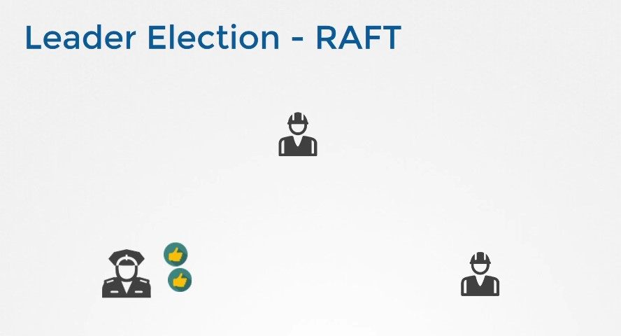
▲ 我們先來講講 leader 如何被選出的，etcd 使用 RAFT 的演算法來執行選舉，每個 node 身上都設有一個 random timer，時間一到就向其他節點發送類似「我可以當 leader 嗎」的請求來獲得選票取得 leader 資格。
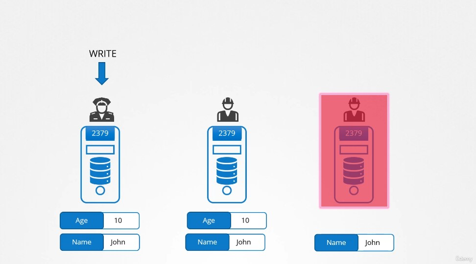
▲ 那.. 當其中一個節點死去沒有辦法執行 transaction，這則 transaction 還有效嗎? 答案是: 只要超過 majority (quorum) 執行這則 transaction 就視為成功、合法。
官方 F&Q Why an odd number of cluster members? 提到
An etcd cluster needs a majority of nodes, a quorum, to agree on updates to the cluster state.
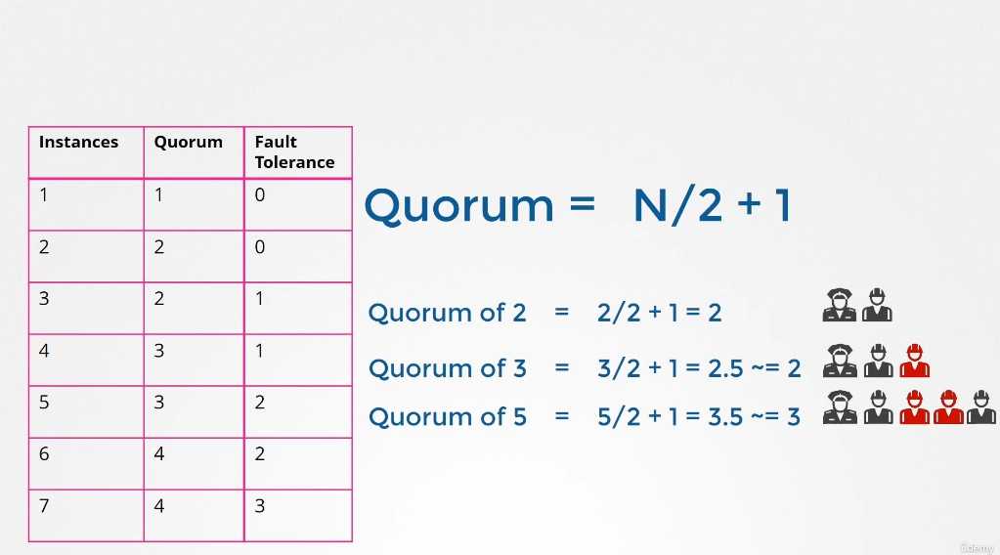
▲ etcd quorum 計算方式以及容錯程度 (無條件捨去)，通常我們會選擇 3, 5, 7 單數作為 etcd cluster node 的數量。
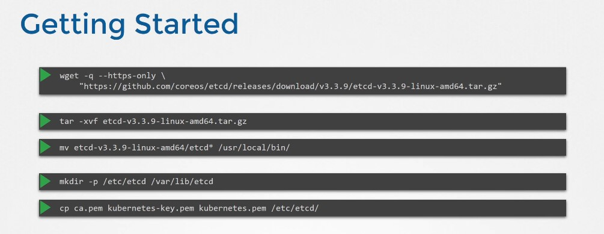
▲ etcd 安裝的方式。
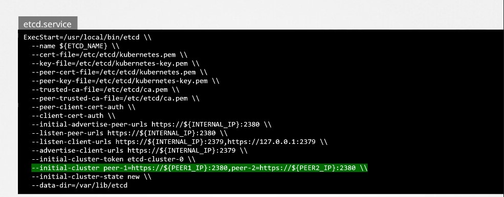
▲ 在 systemd service conf 設定 peer 資訊。
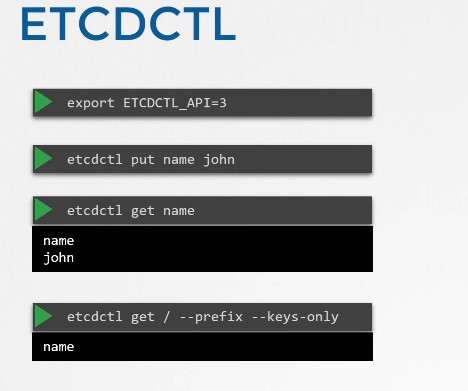
▲ etcd API 有分 V2 與 V3。
Author 老柯
LastMod 2022-07-19